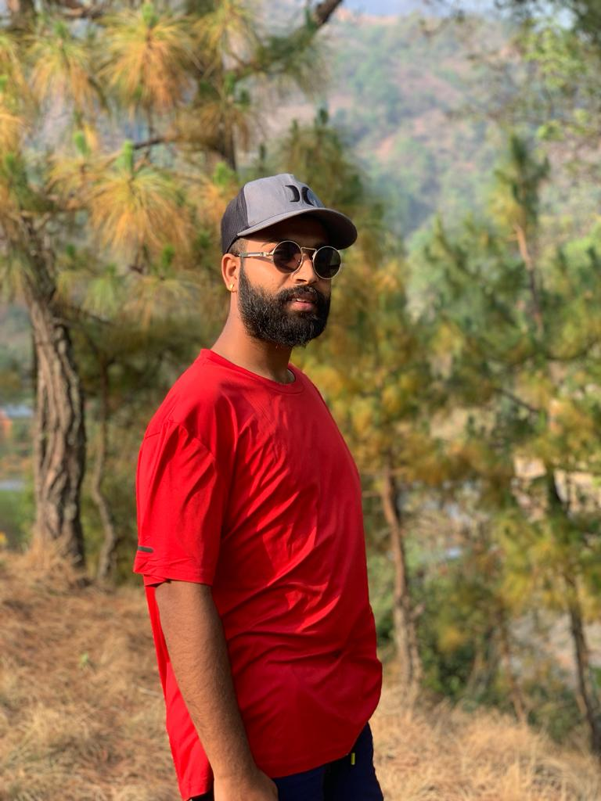

Roshan Pudasaini
Welcome to my profile!
📜 Manifesto
"Hello, I'm Roshan Pudasaini, a passionate and driven Health Assistant and General Medicine practitioner hailing from the vibrant city of Kathmandu, Nepal. I am a dedicated go-getter and quick learner, always eager to expand my knowledge and skills to make a positive impact on people's lives.
With a strong foundation in medicine, I have been actively providing healthcare services and support to those in need, earning the trust and respect of my patients through empathy and compassion. Additionally, my pursuit of excellence led me to study Public Health, where I am constantly seeking research opportunities to further enhance my expertise in promoting community health.Armed with a diverse skill set and an unwavering commitment to public health, I am determined to contribute to the betterment of society. I firmly believe that through continuous learning and a proactive approach, we can create a healthier and happier world.
Join me on this journey as we strive to make a difference in the realm of healthcare and improve the well-being of individuals and communities alike. Together, let's build a brighter future for everyone!"
I'm a go getter person and a quick learner.
🌮 Work History
Covid Panademic
During the pandemic, I proudly volunteered my time and expertise to support COVID-19 relief efforts. I worked tirelessly with healthcare teams to provide assistance and care to those affected by the virus, emphasizing the importance of public health measures and ensuring access to essential resources.
Filed Tour
One of the most rewarding experiences during this time was conducting a household survey in the village of Taker. With a commitment to understanding the local community's needs, I led a comprehensive survey to assess the impact of COVID-19 on households. Through this initiative, we gathered valuable data to identify vulnerabilities, provide targeted aid, and develop appropriate strategies for mitigating the pandemic's effects. This volunteer experience reinforced my belief in the power of community-driven efforts and the significance of public health research in shaping effective interventions. It was a humbling and enlightening experience, which further fueled my determination to pursue a career dedicated to improving the health and well-being of individuals and communities.
Shankharapur Hospital
I had the honor of serving at Shankharapur Hospital as a Health Assistant and OT (Operating Theater) rounder. During my fulfilling 8-month tenure at Shankharapur Hospital, I had the opportunity to be part of a passionate healthcare team. As a Health Assistant, I provided crucial medical support to patients, ensuring they received quality care and attention. Whether it was conducting medical assessments, administering treatments, or assisting with various medical procedures, I always prioritized the well-being of the patients. Moreover, my role as an OT rounder allowed me to be involved in critical surgical procedures, supporting the surgical team and ensuring the smooth functioning of the operating theater. Being a part of these life-changing moments further deepened my understanding of the importance of medical collaboration and precision. Throughout my time at Shankharapur Hospital, I embraced each day as a learning opportunity, striving to enhance my skills and knowledge to better serve those in need. The experience solidified my dedication to the field of healthcare and reinforced my commitment to continuous learning and growth.
Thank you visiting me..!!